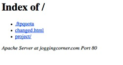

FTP House Cleaning
Introduction
Nobody likes to spend their time cleaning, but sometimes it just has to be done. When you buy web hosting, many host providers create your hosting space on a server and throw in a number of files to “help” you. Don’t get me wrong, they have the best of intentions, but sometimes too much help is no help at all. This exercise has you clean house on those “helpful” files in order to make room for your folders and files. A video demonstration is available at the bottom of this page.
Let's See What We Have
To get started open a browser and type in your own domain name. What do you see? Perhaps something like the possibilities below:
| bluehost.com | |
|  | empty directory |
| justhost.com |
Keep in mind these are only a representative sample. Yours may look different.
In any case, these pages are “placeholders” meant to tell your audience that they have arrived at your domain (that is why your domain name is placed on the page) but there isn’t any content here yet. You’ll also notice that the hosting company’s name is prominently displayed along with a link to their web site (that is called advertising). We want to get rid of the placeholder page and replace it with something of your own.
Filezilla - Manage That Web Space
You should already have installed and configured Filezilla to interact with your hosting account and your sub-domain. If not, backup and complete the Filezilla Tutorials, then come back when you’re done. Back? Good, let’s go on.
- Launch Filezilla and connect to your hosting account.
- On the right-side of the window you should see a list of folders and files similar to what you see in figure 1 below (keep in mind yours may have different names for things and may have more or fewer items).
Files Explained
Take just a minute and understand what you’re looking at:
- The top folder, with the two dots to the right is actually a link to take you up one folder or directory level. On your personal computer we call folders “folders” on a server we call a folder a “directory”.
- The cgi-bin folder is where you can put scripts to process things using other languages like PERL. We won’t be using this folder in this course.
- The .htaccess file is specialized. It contains, or can contain, commands that the server will read in order to control how your web site is “served” to people who request files that are stored in your site. Don’t delete it!
- All of the files that begin with numbers are error pages. You probably are familiar with at least one of these.
- Go back to your browser window that has your placeholder page in it. In the address bar type a forward slash “/” after your domain name and then type gibberish (literally or figuratively - your choice). When done hit your “Enter” key.
- You should now be looking at the 404.shtml page. Based on what you see on your screen, what is a 404 error? Answer this question for yourself and confirm your answer with someone else to see if they agree with you.
- The “default.html” page is the placeholder page. Keep in mind that yours may NOT be named default. Your may have a different name - such as home.html or welcome.html or index.html. This is the one page we want to get rid of to begin our house cleaning. But wait just a minute to do it.
- At the bottom of the figure above is a favicon.ico image file. If you look back at your browser and particularly at the tab where your page is being displayed you should see a small icon on the left side of the tab. That is a favicon. It is meant to help you build brand recognition for your site by displaying it in the tab, in bookmarks and should be very similar if not identical to your site logo.
Get Rid of the Placeholder
- In Filezilla, right-click on the placeholder page (mine is named default.html but yours may be named differently) and select “Delete”.
- When the confirmation dialog appears, click “Yes”.
- Go back to your browser and if you need to, return just to your domain name by clicking the “Back” button in your browser or deleting everything after your domain name in the address bar and hitting your “Enter” key.
- What happened?
- If you deleted the right file, the placeholder, you should be looking at a 404 page or at a list of files and/or folders and each one is a link (this is a directory listing - see the directory listing image shown earlier in the exercise). Do you understand why? You may want to talk to a neighbor, friend or classmate to see if your answer makes sense to him or her.
Continue the Process (later)
With the placeholder gone, you will want to do more house cleaning of your site later. Eventually you will want to replace all of the numbered error pages with pages of your own. Your pages will need to convey the same messages -- telling people that errors have occurred and what they can do about it, if anything -- but the pages will look like your web site, not the host provider’s web site.
You will also want to replace the host provider’s favicon with your own, after you have decided a look for your logo. There are many online tools for creating favicons, my favorite is at http://www.chami.com/html-kit/services/favicon/.
Summary
Hosting services are helpful in that they create hosting space for your site and usually put files in it that are meant to notify site visitors that the domain and site exist until you can get your own materials in place. But, they also take advantage of those placeholder pages by doing lots of their own advertising. Filezilla (and other FTP applications) let you take control of your hosting space by deleting files and folder, creating new folders, renaming folder and generally managing your assets that exist on the remote server.
But wait there’s more...
Sorry, I had to say it. You don’t want to leave your site in this condition. Quick go to the Building a Temporary Page exercise and get it done!